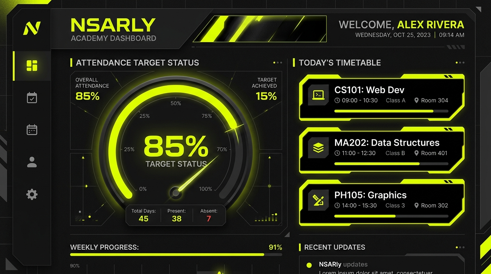

The React Native attendance app engineered for college students. Enforce per-subject compliance, select electives, merge tutorial classes, and build custom timetables.

| FEATURE | GENERIC TRACKERS | NSARLY APP |
|---|---|---|
| Calculation Rule | Aggregate Total Average (Masks shortage in individual subjects) | Strict Per-Subject Rule (Evaluates every course individually) |
| Elective Courses | Pollutes Schedule (Shows unselected alternate electives) | Enrolled Elective Selector (Hides unselected electives from schedule & math) |
| Tutorial Classes | Separate Standalone Subject (Clutters dashboard with fake subjects) | Combined Parent Aggregation (Merges tutorial counts into main theory) |
| College Start Date | Shows Past Occurrences (Generates classes before college opens) | Enforces Start Date Limit (Prevents date navigation before semester start) |
| Past Data Backfill | Manual Daily Marking (Requires marking every past day one-by-one) | Instant Untracked Backfill (Set initial attended/conducted counts in seconds) |
| Timetable Management | Fixed Hardcoded Slots | Custom Timetable Builder (Build custom slots or restore college seeds) |
Evaluates attendance metrics per individual course. If any single subject drops below target, NSARly triggers an immediate shortage warning with exact recovery metrics.
Allows students to pick 1 enrolled elective per group (e.g. Advanced Algorithms vs NLP). Alternate choices are omitted from timetables and calculations.
Links tutorial classes directly to parent theory courses (e.g. TOC Tutorial to TOC Theory), aggregating attended and conducted numbers seamlessly.
Create, edit, or clear weekly class slots to build your custom schedule from scratch, or re-import default college timetable seeds anytime.
Enforces semester start date boundaries so past dates aren't polluted. Includes initial count editors for mid-semester untracked backfills.
Set custom reminders linked to specific timetable class slots or target dates, with optional native push notifications and in-app alerts inside Settings.
NSARly is built on React Native with Expo SDK 57 and Expo Router v4. Follow these steps to clone and run locally:
Create a .env file in the project root with your Firebase project config placeholders:
Given total attended classes A (including initial untracked backfill and merged tutorial classes) and total conducted classes C (excluding cancelled/not held classes):
Cancelled Class Rule: Classes marked as CANCELLED (lecturer absent, college holiday, room shift) are incremented in total occurrences but excluded from total conducted classes C, ensuring student percentages are never penalized.
Subject schema defining elective groups and parent-tutorial linkage:
NSARly uses an offline-first architecture powered by AsyncStorage. All timetable entries, occurrence logs, and profile preferences are persisted locally for instantaneous app startup, while asynchronously syncing changes to Firebase Firestore under user collections: